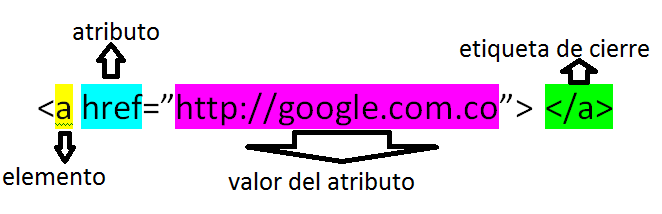

Atributos y valores
autoria propia
Los atributos de HTML son palabras especiales utilizadas dentro de la etiqueta de apertura considerandose como informacion adicional esto para complementar, añadir informacion o significado al elemento controlando el comportamiento del mismo, estos siempre van acompañados del signo = y son precedidos por un valor que va entre comillas ya sean dobles o simples.
Por lo tanto el atributo escrito en una etiqueta (por ejemplo párrafo) se ve así:
<p atributo="valor">Este es un párrafo</p>
Celaya Luna, A. (2014). Creación de páginas web: HTML 5. Málaga, UNKNOWN: Editorial ICB. Recuperado de http://ebookcentral. proquest. com/lib/ucsgsp/detail. action. Creación de páginas web: HTML 5